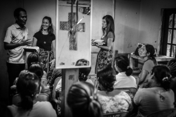

We know that educators have a unique persective on the lives of children. Teachers and school administrators can use the Educell application to keep track of school attendance, grades, and overall progress. They can also document significant events relevant other sevice providers.
Our Mission
Educell is an organization and a technology that helps students in rural areas access the programs and education they deserve by connecting schools, social workers, and educators and empowering them to work together to serve children no matter where they live.
Where Educell Makes a Difference
Educators
Learn more

Social workers
Learn more
In order to truely help a child in need, it is crucial to have access to information about what is going on in that child's life. Social workers can use Educell to learn how the child is doing in school and any relevant observations from educators.
Schools
Learn more
Educell gives rural educational institutions a powerful tool to evaluate the needs of their students, identify underserved individuals or groups, and share that data with social worker, government officials, and other service providers.
Students
Learn more
We believe that every child deserves adequate education and social services, no matter their income level, proximity to an urban area, or country of birth. Educell strives to make sure that no child falls through the cracks